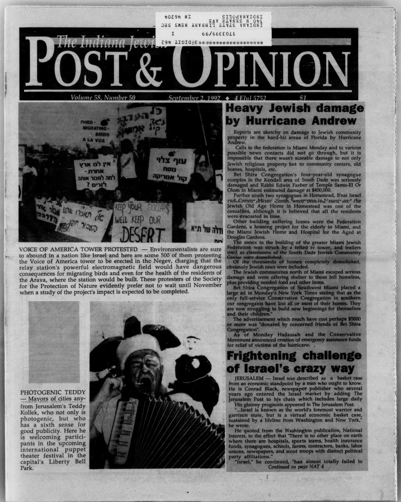
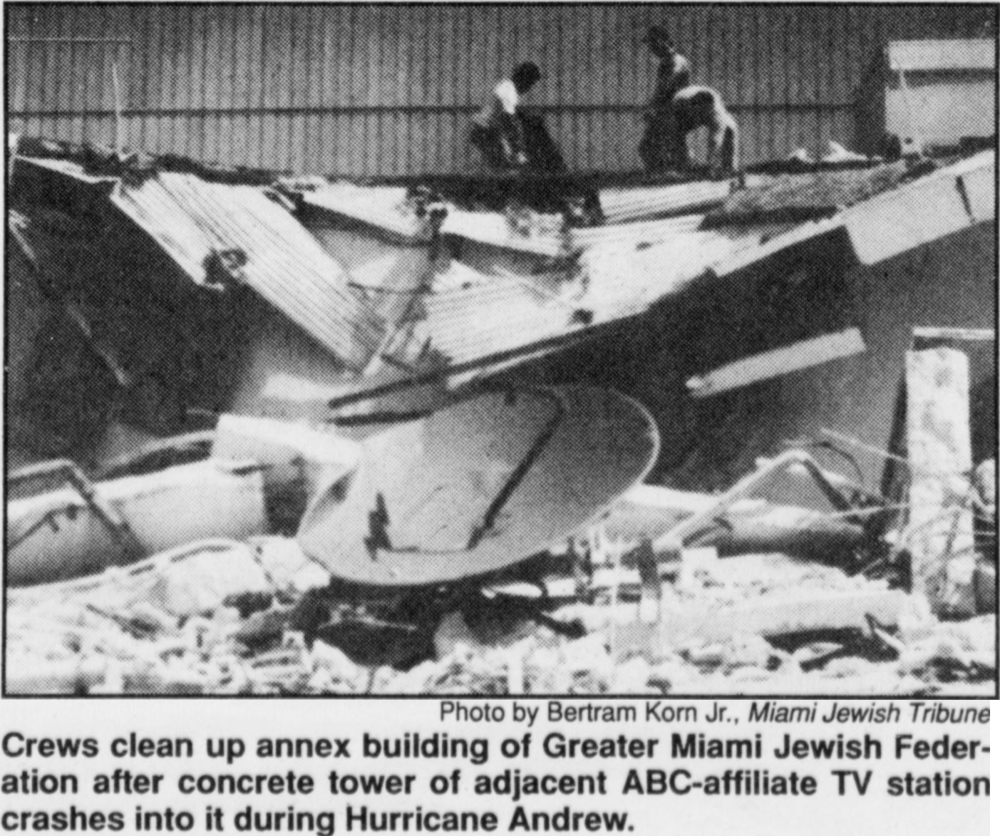

HN HN-799 · September 2, 1992 · Disasters, Accidents & Emergencies > Rescues, Evacuations & Emergency Response > Long-term community recovery and reconstruction
Source: Jewish Post, p. 1 — original page; NOAA's hurricane report.
Report: A community-focused report described telephone connections failing after the hurricane, damaged synagogues and other Jewish facilities, and uncertainty about the scale of community losses. It quoted a $400,000 damage estimate at one Miami congregation.
Assessment: A partial post-disaster community inventory, not the total impact on Florida or every Jewish institution. The report's limited ability to reach contacts is part of the evidence; NOAA's later storm assessment covers a much broader geographic and economic area.
Identity-review candidate peers: HN-798:Algorithmic
Authentic images retrieved from Hoosier State Chronicles (Indiana State Library) and National Library of Israel — Historical Jewish Press (JPress). Article crops are located using the archive's own OCR word coordinates and rendered at native crop resolution; article clips are assembled from the archive's own article-block images; page images marked "archive tiles" are stitched from the archive's own tiled page service at its 256-px tile cap; page images marked "issue PDF" are single pages rasterised from the archive's own issue PDF, with the page chosen by matching the headline against the PDF's text layer; page scans are reduced-size access renditions. No images were generated, mocked, or retouched.


Not yet acquired. Queued for provider-specific acquisition testing (see source-acquisition manifest).
URL (preserved verbatim): https://newspapers.library.in.gov/?a=d&d=JPOST19920902-01.1.1
Saved research report: Historical_Newspaper_Event_Research_778-802_2026-10-23.md
Evidence note: A newspaper report means a historical publication made a claim; it does not establish that claim as fact. Contemporary reporting is separated from later scholarly context and our own assessment.